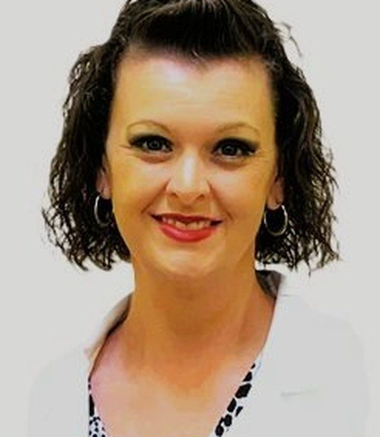
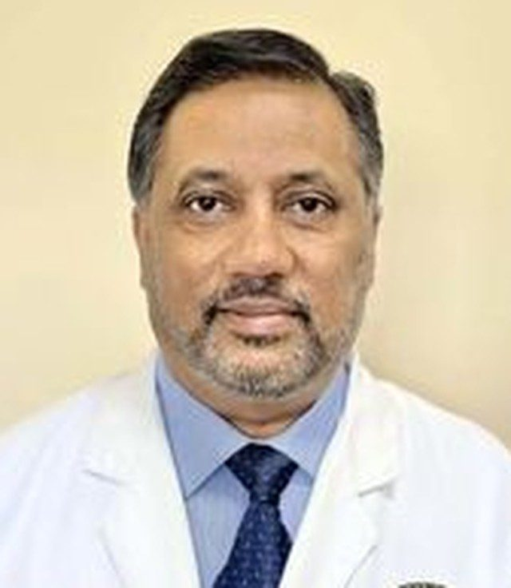
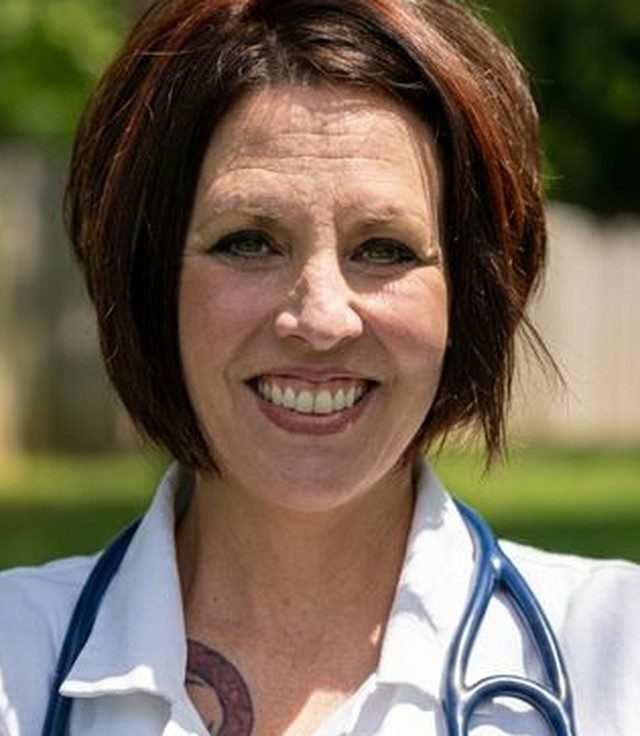
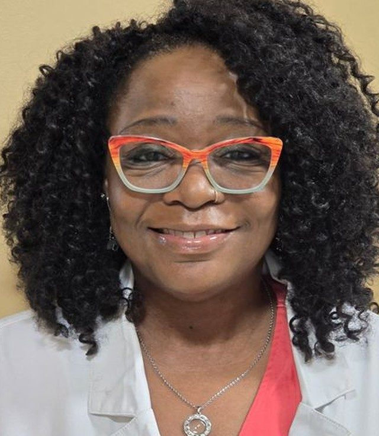
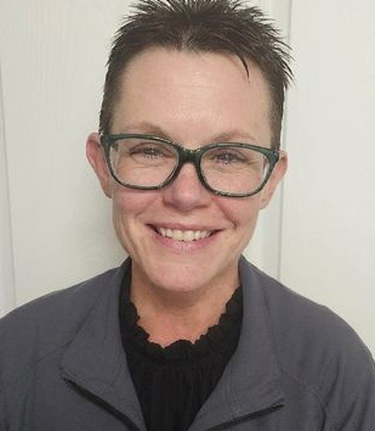
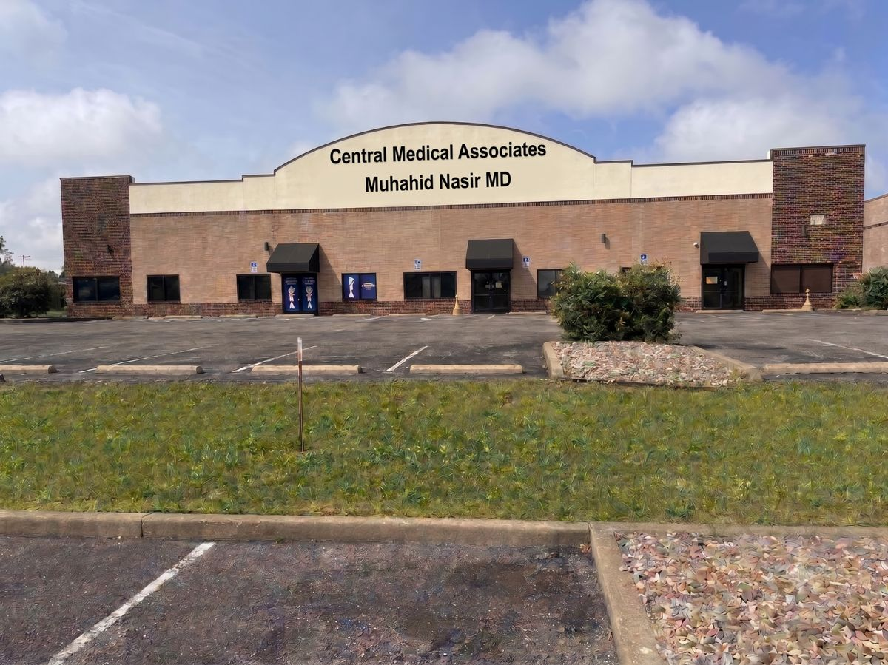
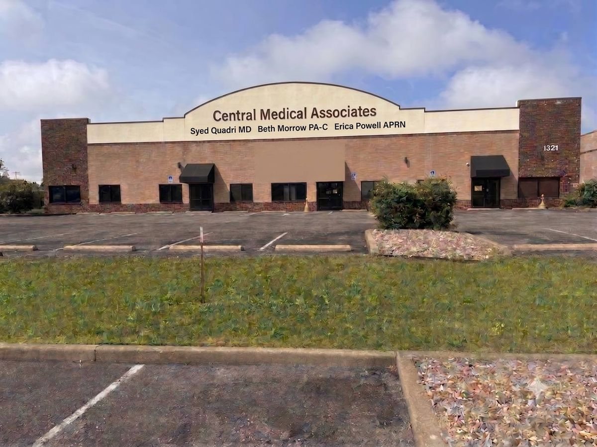
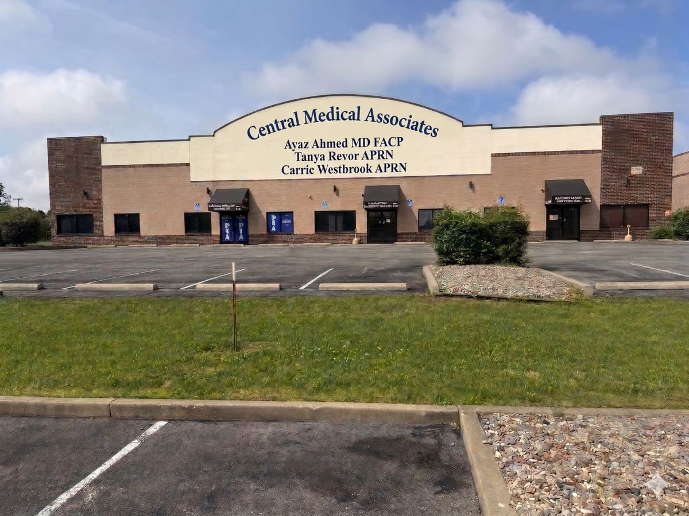
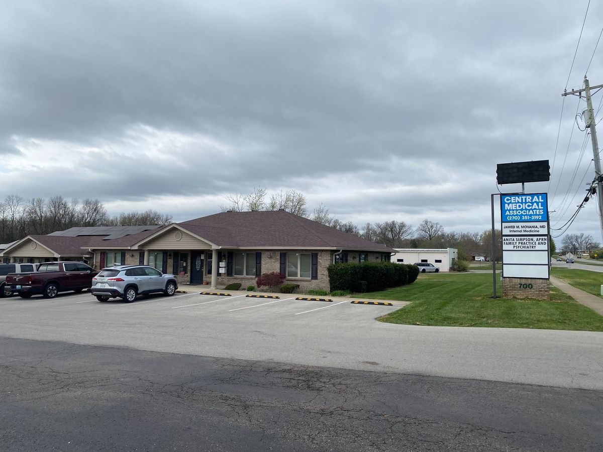
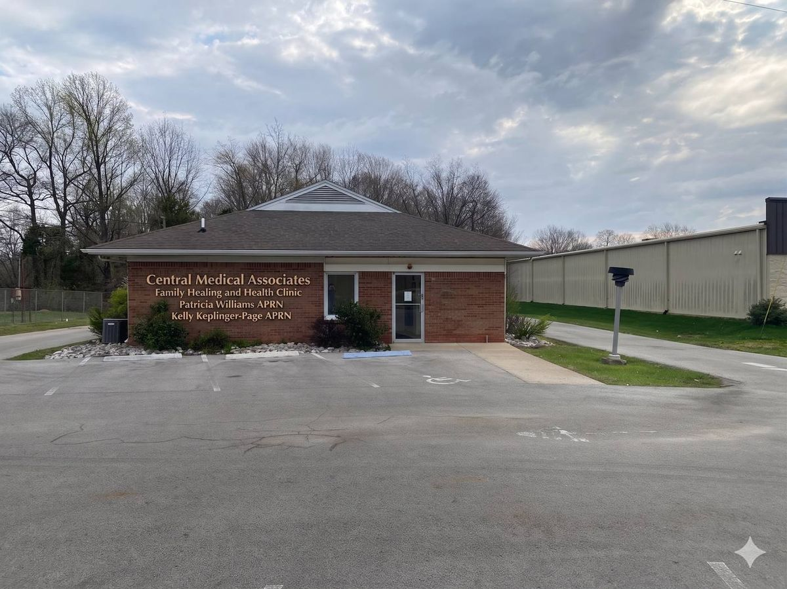

Copayments and coinsurance
Copayments and coinsurance are expected at the time of service. Please be prepared to pay the amount required by your health plan when you check in.
Patients are central to our mission.
Central Medical Associates brings primary care, on-site diagnostics and laboratory services, and mental health care together across five Hardin County locations — plus telehealth visits — unbound by outside interests, and driven solely by what's best for our patients.
Central Medical Associates was established in 2016 through the amalgamation of the practices of Dr. Movania, Dr. Ahmed, Dr. Quadri, and Dr. Nasir. The goal was simple: consolidate resources and expand our capabilities to comprehensively serve our patients under one roof.
While changes in the clinical landscape have since led us to step away from rehabilitation and radiology services, our commitment to comprehensive care remains. Today, alongside dedicated primary care, we continue to offer robust diagnostic and laboratory services — and we're proud to have recently expanded into mental health care.
Drs. Movania, Ahmed, Quadri, and Nasir combine their independent practices into one group, consolidating resources to better serve patients.
As the clinical landscape changed, CMA stepped away from rehabilitation and radiology services to sharpen its focus on primary care and diagnostics.
CMA offers comprehensive primary care at two locations, a full on-site lab and diagnostic suite in Elizabethtown, and a growing mental health service line.
CMA is honored to have recently welcomed Patricia Williams, APRN — the most experienced Nurse Practitioner in Hardin County — and Kelly Keplinger Page, APRN, to the growing practice.
“Central Medical Associates is an independent primary care practice dedicated to serving patients across every generation. Our mission is to provide compassionate, comprehensive care with a specialized focus on managing complex chronic conditions. Unbound by outside interests, our clinical decisions are driven solely by what is best for our patients.”Central Medical Associates — Mission Statement
From routine wellness to the ongoing management of complex chronic conditions, our clinicians work as one team across every location.
Comprehensive primary care for patients of every age, from pediatric wellness to geriatric support.
A full on-site laboratory and diagnostic suite at our Elizabethtown main office, for fast, coordinated results.
Compassionate psychiatric and mental health support, integrated with your primary care.
Twelve physicians and advanced practice clinicians, sharing decades of combined experience across Hardin County.
Dr. Syed Quadri has been a dedicated member of the CMA team since 2016, with a career spanning 42 years. He specializes in evaluating and managing complex medical conditions in adult patients.
He began his medical education at Gulbarga University in India (1984) and completed advanced training in Internal Medicine at Providence Hospital in Southfield, Michigan (1997). He has practiced in Kentucky since 1998.
Dr. Quadri served as Medical Director of the local free clinic from 2002 until its closing in 2024, and currently serves as President of the Hardin County Medical Society.
Beth Morrow is a Physician Assistant-Certified with 32 years of clinical experience, having joined CMA on February 15, 2018. Her focus is on longitudinal care — the prevention, diagnosis, and treatment of complex and chronic illnesses.
She graduated from the University of Kentucky in 1993 and has practiced across Pediatrics, Internal Medicine, and Family Practice throughout central Kentucky.
Beth volunteered at The Free Clinic from 2002 to 2024 and remains active in local charities, horse racing, art, gardening, and time with her children and grandchildren.

Originally from Radcliff, Erica Powell served as a Registered Nurse for 19 years before transitioning to advanced practice. She joined CMA in March 2020.
She holds a Master of Science in Nursing from Chamberlain University (2019) and a Bachelor of Science in Nursing from Kaplan University (2016).
Erica's practice centers on chronic condition management and women's health — providing a supportive, empowering environment for her patients. She is currently accepting new patients.

Dr. Ayaz Ahmed has been a pillar of the Elizabethtown medical community for nearly 30 years, providing a seamless continuum of care between clinic and hospital.
He has served as Internal Medicine Hospitalist at Baptist Health Hardin since 1996, and chaired the Department of Medicine at Hardin Memorial Hospital in 2004.
Dr. Ahmed earned his medical degree at Osmania Medical College in Hyderabad, India, and completed his Internal Medicine residency at UPMC Mercy Hospital in Pittsburgh, PA.

Tanya Revor joined CMA in September 2018 and brings 20 years of clinical experience, with a focus on chronic condition management and long-term patient relationships.
Originally from Arvada, Colorado, she earned her Bachelor's degree from the University of Louisville (2007) and her Master's from Eastern Kentucky University (2016).
Tanya serves as a clinical preceptor for nurse practitioner students each year and volunteers as a fast-pitch softball coach in the local community.
Carrie Westbrook is a Nurse Practitioner with a highly diverse clinical background. A Kentucky native and former military brat, her first career was as an Electronics Engineer repairing military components. Finding her passion in healthcare, she became a nurse in 2011. Carrie built a broad foundation of patient care experience—spanning geriatrics, pediatrics, psychiatry, and med-surg—before earning her NP in 2022.
Outside the clinic, she is a proud mom of three boys, an enthusiastic sideline soccer fan, and loves spending downtime at her happy place: the beach.
Dr. Mujahid A. Nasir brings approximately 30 years of medical experience to CMA. Originally from Pakistan, he provides comprehensive primary care to patients of all ages.
He earned his medical degree in 1995 from King Edward Medical College and completed postgraduate training in Family Practice at St. Vincent Mercy Hospital in Toledo, Ohio.
His focus includes preventive care, chronic disease management (hypertension, diabetes, cholesterol, arthritis), and acute sick visits. He is a member of the American Academy of Family Physicians.
With over 31 years of clinical experience, Dr. Jawed Movania joined CMA in 2016. Originally from Karachi, Pakistan, he bridges Internal Medicine and Addiction Medicine.
His practice is specialized in geriatrics, complex chronic conditions, and evidence-based treatment for opioid use disorders. He trained at Baylor College of Medicine (residency) and Dow Medical University (1990).
From 2002–2024, Dr. Movania volunteered at the local free clinic. Outside the clinic he enjoys gardening and fishkeeping.

Originally from Louisiana, Anita Simpson served as a Registered Nurse for 20 years before advancing her practice. She joined CMA in August 2021 with 25 years of total nursing experience.
She holds a Master of Science in Nursing from Herzing University & Chamberlain University (2022) and has been board certified since 2021.
Anita volunteers at the local Food Bank and is deeply involved with the NAACP and the Boys & Girls Club. She is currently accepting new patients.
With 30 years of dedicated service, Patricia Williams is recognized as the most experienced Nurse Practitioner in Hardin County. She recently joined CMA after over a decade in independent practice.
Patricia has collaborated with local physicians including Dr. Faulkner and Dr. Movania, and holds an MSN from Spalding University (1996).
Her practice reflects a whole-person, holistic philosophy, treating multiple generations of the same families over three decades.

An Elizabethtown native, Kelly Keplinger Page joined CMA in 2026 with 13 years of experience as a board-certified APRN, shaped by work in Rural Health Clinics and Urgent Care.
She earned her MSN from Western Kentucky University (2013) and provides continuous care across the full age spectrum, from pediatric wellness to geriatric support.
“Being able to serve the families in my home community is a privilege. I believe in providing care that is as compassionate as it is comprehensive.”
Nancy Allen is a dual-certified Nurse Practitioner specializing in Psychiatry and Mental Health, with over 15 years of clinical experience. She has cared for CMA patients since December 2024.
She earned her Bachelor's degree from the University of Louisville (1999) and her Master's from Graceland University (2011), holding PMHNP-C and FNP-BC certifications.
Originally from Wilburton, Pennsylvania, Nancy is an active member of the Elks Society and enjoys gardening in her free time.
We see patients at five locations — four in Elizabethtown and one in Radcliff — plus telehealth visits for patients who can't make it in person.

CMA — NASIR
CMA — QUADRI
CMA — AHMED
CMA — MOVANIA, RADCLIFF
CMA — FHHA little preparation helps you get the most out of your time with your clinician.
Please arrive 15 minutes before your scheduled appointment to complete check-in. Be prepared to share any recent changes to your phone number, address, email, or insurance coverage at the front desk.
Write down any questions or concerns ahead of time — especially anything you'd like to discuss regarding recent lab tests or diagnostic results.
Review copayment, coinsurance, self-pay discount, payment-plan, and financial-hardship information.
Review lab, imaging, and procedure results, message your care team, and request refills — all in one secure place.
Plain-language guides from our care team on the conditions, services, and preventive care that matter most to our patients — across every generation.
Your yearly wellness visit is one of the most effective tools for catching problems early, before they become harder to treat.
An annual wellness exam gives your clinician a full picture of your health — from blood pressure and weight to bloodwork and age-appropriate cancer screenings. It's also the best time to update your medication list, discuss any new symptoms, and talk through your family history.
Bring a list of your current medications and any questions you've been meaning to ask. If it's been a while since your last visit, your clinician may recommend catching up on routine labs or screenings during this appointment.
Hypertension, diabetes, and high cholesterol are manageable with the right care plan and regular follow-up.
Chronic conditions like high blood pressure, diabetes, and high cholesterol often have no obvious symptoms, which is why regular monitoring matters. Our clinicians work with you to build a long-term plan — combining medication management, lifestyle guidance, and routine labs — rather than treating each visit in isolation.
Consistency is key. Keeping scheduled follow-ups, taking medications as prescribed, and reporting new symptoms promptly all help keep chronic conditions from progressing.
Starting August 1, our clinic offers the high-dose flu vaccine, especially recommended for seniors over 65.
As we age, our immune response to the standard flu vaccine can weaken. The high-dose flu vaccine is formulated to produce a stronger immune response in adults 65 and older, offering better protection during flu season.
If you've received a flu shot elsewhere — at a pharmacy or workplace clinic — bring your record with you so we can update your chart and avoid duplicate doses.
Two vaccines that often get overlooked, but matter a great deal for adults as they age.
Shingles can cause painful, long-lasting nerve pain, and becomes more common with age. RSV, once thought of mainly as a childhood illness, can cause serious respiratory illness in older adults as well.
Both vaccines are age- and risk-dependent. Ask your clinician at your next visit whether you're due, especially if you're 50 or older or manage a chronic health condition.
Mental and physical health are connected — which is why our psychiatric care is coordinated with your primary clinician.
Conditions like depression and anxiety often show up alongside physical symptoms — fatigue, sleep changes, or trouble managing a chronic illness. Having mental health care coordinated with your primary care team means fewer gaps and a more complete picture of your overall health.
Our psychiatric and mental health clinician works alongside your primary clinician, so your care plan — medications included — stays consistent across every visit.
A new or changing spot on your skin is worth mentioning — most are harmless, but a quick check offers peace of mind.
Not every mole or spot needs a biopsy, but any that are new, changing in size or color, or don't heal are worth having a clinician look at. A skin biopsy is a minor, in-office procedure used to examine tissue more closely when something looks uncertain.
Most biopsy results are benign. Either way, having a spot checked is a simple way to catch something early, when it's most treatable.
Recovery is a medical process, not a moral one — and treatment works best when it's part of your ongoing primary care.
Substance use disorder is a chronic medical condition, and treating it well takes the same long-term, judgment-free approach we bring to any other chronic condition. Our addiction medicine care focuses on evidence-based treatment and steady, ongoing support.
If you or a loved one is struggling, reaching out to your clinician is a confidential first step — treatment plans are built around your specific situation and goals.
For patients managing ongoing conditions, remote physiological monitoring adds an extra layer of visibility between visits.
Remote physiological monitoring uses at-home devices — like blood pressure cuffs or glucose monitors — to share readings with your care team between office visits. This helps your clinician spot trends early and adjust your care plan without waiting for your next appointment.
Ask your clinician if remote monitoring is a good fit for the condition you're managing.
Not every health concern needs the emergency room. Knowing the difference can save you time — and money.
Urgent care is the right choice for issues that need same-day attention but aren't life-threatening — minor injuries, infections, or a sudden illness. The emergency room is for serious, potentially life-threatening situations, like chest pain, difficulty breathing, or major injuries.
When in doubt about a symptom, calling your clinician's office first can help you decide the safest, most appropriate place to be seen.
This Health Library is provided for general educational purposes and is not a substitute for professional medical advice, diagnosis, or treatment. Always talk with your Central Medical Associates clinician about questions specific to your health.
What's new at Central Medical Associates — new clinicians, expanded services, and seasonal reminders.
An Elizabethtown native with 13 years of experience joins our Family Healing and Health (FHH) location.
Central Medical Associates is proud to welcome our newest clinical staff member, Kelly Keplinger Page, APRN. An Elizabethtown native, Kelly brings 13 years of experience — shaped by work in Rural Health Clinics and Urgent Care — back to her hometown.
Kelly practices Family Medicine at our FHH location, providing continuous care for patients across the entire age spectrum, from pediatric wellness to geriatric support.
CMA has expanded into psychiatry and mental health, coordinated directly with your primary care team.
We're proud to announce our recent expansion into mental health care. Nancy Allen, PMHNP, FNP, a dual-certified nurse practitioner with over 15 years of experience, now provides dedicated psychiatric and mental health care at our Ring Road location.
Mental health care is coordinated directly with your primary clinician, so your care plan — medications included — stays consistent across every visit.
Our clinics begin offering the high-dose seasonal flu vaccine, especially recommended for seniors 65 and older.
Starting August 1, 2026, our clinics will offer seasonal influenza vaccinations, including the high-dose flu vaccine highly recommended for all seniors over the age of 65.
We also offer the pneumococcal vaccine year-round, and encourage patients to ask about age-appropriate Shingles and RSV vaccinations at their next visit.
The most experienced Nurse Practitioner in Hardin County brings 30 years of care to our growing practice.
Central Medical Associates is proud to welcome Patricia K. Williams as the newest addition to our clinical team. With 30 years of dedicated service, Patricia holds the distinction of being the most experienced Nurse Practitioner in Hardin County.
Patricia specializes in Family Medicine, offering comprehensive, whole-person care for patients of all ages — from K-12 students to seniors.
A reminder that every CMA location accepts all insurances and is currently welcoming new patients.
Whether you're establishing care for the first time or transferring records from another practice, our team is ready to help. All insurances are accepted, and new patients are always welcome across every CMA location.
Call your preferred location directly to schedule, or use the Patient Portal for non-urgent requests.
Review results, message your care team, and request refills securely — all from your phone or computer.
We highly encourage all patients to sign up for HEALOW, our secure patient portal. Through HEALOW, you can review results from labs, imaging, and procedures, communicate directly with your care team, and request medication refills quickly and easily.
Need help signing up? Ask our front desk staff at your next visit, and we'll be happy to help.
Central Medical Associates is committed to making billing and payment arrangements as clear and manageable as possible.
Billing Office270-982-2015Copayments and coinsurance are expected at the time of service. Please be prepared to pay the amount required by your health plan when you check in.
Payments may be made at any Central Medical Associates office or through the billing office, either in person or by telephone.
Payment plans are available for patients with a large outstanding balance who are unable to pay the full amount at one time. Please contact the office to discuss an arrangement.
Charges may be reduced or waived in cases of documented financial hardship. Each request is reviewed by the applicable office on a case-by-case basis.
Every Central Medical Associates office offers a self-pay discount for services furnished by Central Medical Associates. Contact your office before or at the time of service for details.
Patients who have lost insurance coverage are strongly encouraged to contact the office rather than postpone or discontinue needed care. We will work with you to explore an appropriate arrangement so healthcare can continue to be provided regardless of your immediate ability to pay.
Heat exhaustion occurs when the body loses too much water and salt, usually through heavy sweating. It can progress to life-threatening heat stroke if it is not recognized and treated promptly.
Symptoms may include heavy sweating, headache, dizziness or lightheadedness, weakness, unusual fatigue, irritability, thirst, nausea or vomiting, muscle cramps, rapid heartbeat, elevated body temperature, and decreased urination.
Drink fluids regularly, take frequent breaks in a cool or shaded place, wear lightweight and light-colored clothing, avoid strenuous activity during the hottest part of the day, and gradually increase exposure when returning to outdoor work or exercise. Never leave children, older adults, or pets in a parked vehicle.
Move the person to a cooler location, have them rest, loosen or remove unnecessary clothing, cool the skin with wet cloths, misting, or a cool shower, and provide cool water or an electrolyte drink if they are alert and not vomiting. Do not resume strenuous activity that day.
Call 911 immediately for confusion, disorientation, slurred speech, fainting, seizures, inability to drink, very high body temperature, or hot skin that may be dry or heavily sweating. Begin rapid cooling while waiting for emergency help. Do not give fluids to a person who is confused, unconscious, or unable to swallow safely.
Sources: CDC/NIOSH and OSHA guidance on heat-related illness and first aid. This information is educational and does not replace an individual medical evaluation.
Tick activity is a major concern this season. CDC reported that weekly emergency-department visits for tick bites were higher than usual in 2026. Ticks are generally most active during the warmer months—especially April through September—but exposure can occur at any time of year.
Use an EPA-registered insect repellent as directed. Treat clothing and gear with products containing 0.5% permethrin, or purchase pretreated clothing. Wear long sleeves, long pants, closed shoes, and light-colored clothing when practical.
Ticks commonly live in wooded, brushy, grassy, and leaf-covered areas. Walk in the center of trails and avoid brushing against tall grass or dense vegetation.
Check the entire body, including the scalp, hairline, ears, underarms, waist, groin, behind the knees, and between the legs. Carefully inspect children, pets, clothing, backpacks, and outdoor gear.
Shower soon after returning indoors. Tumble-dry clothing on high heat when appropriate; washing alone may not kill ticks. Follow garment-care instructions.
Do not burn the tick, cover it with petroleum jelly or nail polish, or use other methods intended to make it detach. Prompt mechanical removal with tweezers is preferred.
May cause fever, severe headache, muscle pain, nausea or vomiting, abdominal pain, and rash. The rash may appear late or may be absent. RMSF can become life-threatening quickly, so early medical evaluation and treatment are critical.
Symptoms often begin within one to two weeks and may include fever, chills, headache, muscle aches, nausea, fatigue, and sometimes rash. Many patients do not remember a tick bite.
Possible symptoms include fever, headache, fatigue, muscle or joint pain, swollen lymph nodes, and an expanding rash. The rash does not always look like a classic “bull's-eye,” and some patients have no recognized rash.
A tick bite can trigger a potentially serious allergy to alpha-gal, a sugar found in mammalian meat and some mammal-derived products. Reactions may be delayed for several hours after eating and can include hives, swelling, stomach symptoms, breathing difficulty, or anaphylaxis.
Call promptly if you develop fever, rash, severe headache, marked fatigue, muscle or joint pain, facial weakness, palpitations, shortness of breath, or other new illness within days to weeks after a tick bite or after spending time in tick habitat. Tell the clinician when and where the exposure occurred. Seek emergency care for trouble breathing, swelling of the tongue or throat, fainting, confusion, severe weakness, or other signs of a serious allergic reaction or severe illness.
Sources: U.S. Centers for Disease Control and Prevention guidance on ticks, tick-bite removal, Rocky Mountain spotted fever, ehrlichiosis, Lyme disease, and alpha-gal syndrome. This information is educational and does not replace an individual medical evaluation.